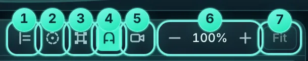
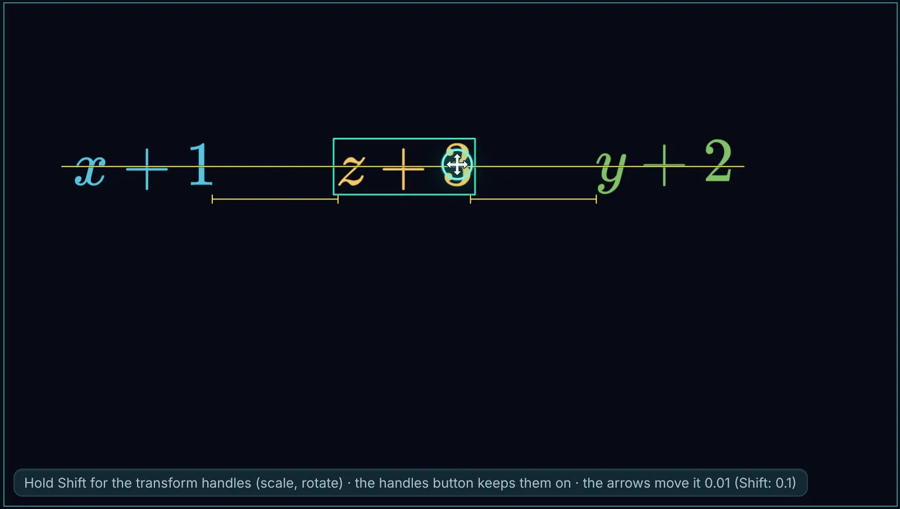
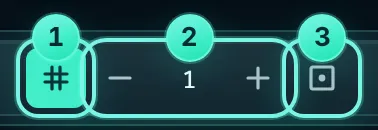
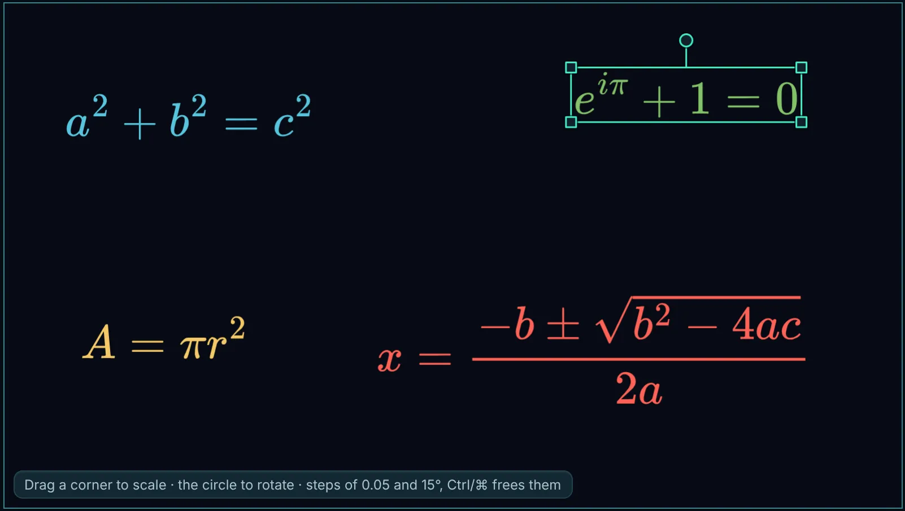
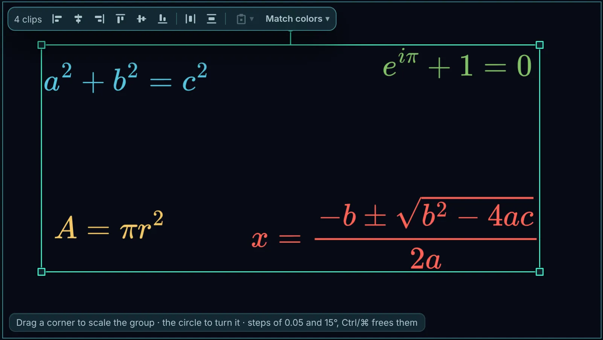
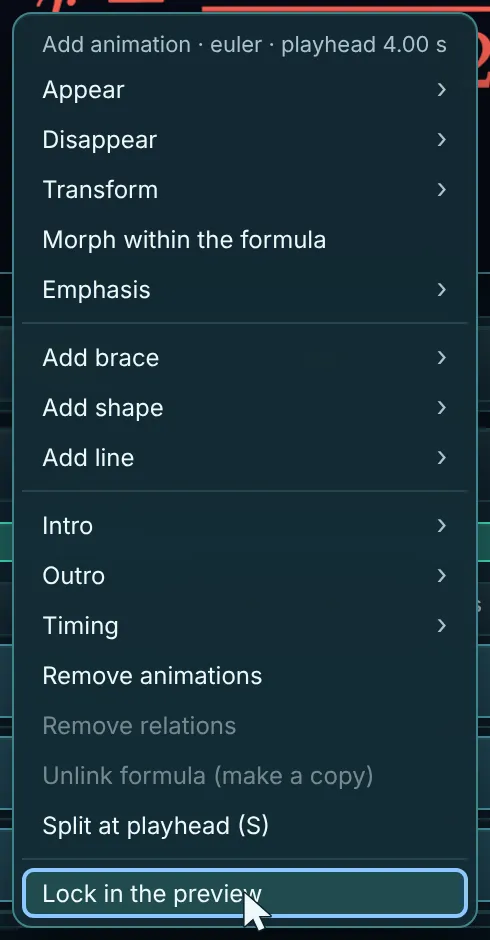
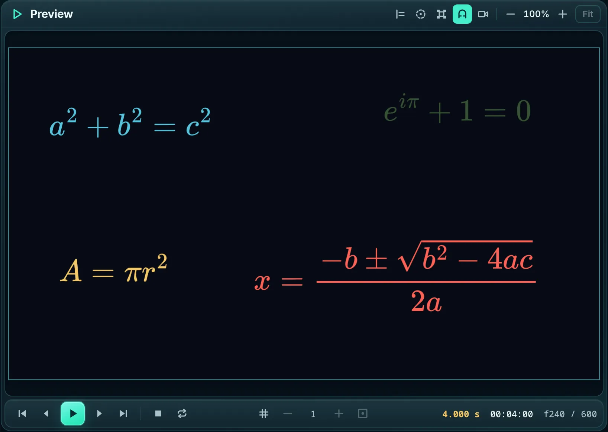
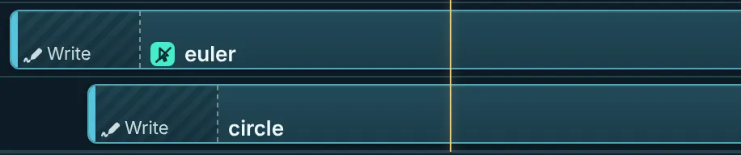
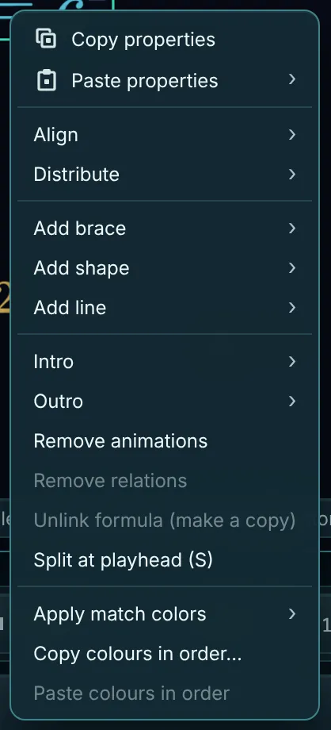

Placing things in the Preview
The Preview is where you put things on the scene. Click to select, drag to move, with guides that line things up; nudge with the arrow keys; scale and turn with handles; and work on several things at once.
The Preview at a glance
The Preview shows the scene at the time of the playhead (the line you move along the ruler of the timeline), as Manim will draw it. What you do in it edits the clip of the formula you touch — one appearance of that formula on the timeline (see the glossary): its position, its scale and its rotation. Scene positions are in Manim's units: the frame is 8 units tall and, at 16:9, 14.22 units wide, with the origin at its centre and y going up.
The view toolbar sits in the title bar of the panel, at the right. Its buttons, from the left:

Selecting
Point at a formula and the glyph under the pointer is outlined. Click, and the formula's clip is selected: it gets a teal box. A click on a clip of the timeline selects the same thing, so the Preview and the timeline always agree.
While the scene plays, the Preview leaves the pointer alone: nothing is outlined, selected or dragged, and the transform handles are hidden. What is selected stays selected. Stop the scene to work on it. You can still pan and zoom the view while it plays.
- Ctrl+click or Shift+click adds a clip to the selection, or takes it out when it is already there. Such a click only changes the selection: nothing is dragged.
- A drag that starts on empty space draws a rectangle. It selects every clip whose formula it touches, as it grows. With Ctrl or Shift held when you press, it adds to the selection; Esc brings the selection from before back.
- A plain click on empty space clears the selection.
- Ctrl+A selects every clip that is on screen at the playhead.
- With several clips selected, a plain click on one of them narrows the selection to it.
The whole formula counts, not only its ink: the gap between two glyphs belongs to the formula. To pick single glyphs of a formula, hold Alt: that is its own page in the Layout section.
Dragging and snapping
Press on a formula and drag: its clip follows the pointer. If it is one of several selected clips, they all move together. The box around what you move snaps to the edges and the centres of the other formulas and of the frame, as soon as it is within 8 pixels of a match. Yellow guides show what it lines up with.
On an axis where no edge or centre matches, a dragged formula can still snap to the spot that is as far from two formulas as they are from it, or to the gap two neighbours keep. Those equal gaps are drawn as bars with a tick at each end.

A corner drag of a handle (below) sticks the same way to the width or the height of another formula, and shows the two equal sizes as bars.
Snapping has a switch: the magnet button of the view toolbar (Snap to objects, also in Preferences ▸ Snap to objects). The colour and the width of the guides are in the same menu, as Guide colour and Guide width.
One drag is one undo step, and Esc during the drag puts everything back.
Holding a drag to one axis, or setting it free
Press the button first, then the key: with a key already down, the press means something else (Ctrl+click adds to the selection, and Alt+click picks glyphs or pans the view).
| Held during the drag | What the drag does |
|---|---|
| nothing | Follows the pointer, snapping to the other formulas and to the grid. |
| Alt | Moves only along one axis: horizontally or vertically, whichever the pointer has gone further along since the drag began. It still snaps along that axis. |
| Ctrl | Follows the pointer with no snapping at all: no guides, no grid. |
| Ctrl+Alt | Along one axis, with no snapping. |
The axis is chosen again as the pointer moves, and a note at the bottom of the Preview says which one holds. Let go of Alt and the drag follows the pointer again. A key pressed or let go changes the drag at once, without a pointer move.
Nudging with the arrow keys
Click a formula, and the arrow keys move the selected clips: ← → ↑ ↓ by 0.01 scene units, with Shift by 0.1. A hint at the bottom of the Preview says so once it has the keys. There is no snapping: a press moves by its step exactly.
- The keys edit the clip at the playhead, as a drag would. A clip that a drag would leave where it is stays, and a notice names it.
- A run of presses is one undo step, a key held down included. Any other edit in between, a new click on the scene, or another time of the playhead starts a new step.
- With nothing selected on screen, ← and → step the playhead, as everywhere else. With Ctrl or Alt held the arrows are not taken.
For an exact place, type it: the X, Y, Scale and Rotation fields of Initial state take numbers, and Flip X and Flip Y mirror the formula.
The grid
The Show grid button, in the middle of the transport bar, draws a grid under the formulas and makes a dragged formula land on its nearest node. The grid exists only in the editor: it is never in an export.

- The spacing goes through 2, 1, 0.5, 0.25 and 0.1 units. The shortcuts are Ctrl+' to show or hide the grid, and Alt+↑ and Alt+↓ for denser and sparser.
- The last button chooses what lands on a node: the formula's centre (a dot in a box) or its nearest edges (four corners).
- Ctrl held during the drag frees it. A guide to another formula wins on its axis, because a line-up with another formula is more specific.
- The same choices are in Preferences ▸ Show grid, Grid spacing and Grid snaps.
Scale and rotate: the handles
Hold Shift over a selected clip and its transform handles appear, with a hint in the corner. The button that keeps them on without Shift is the third one of the view toolbar (Preferences ▸ Keep the transform handles shown).

- A corner scales the formula uniformly about its centre. The scale goes in steps, 0.05 by default: change it with Preferences ▸ Scale step (0.05, 0.1, 0.15, 0.2, or Custom…, which takes a number or a fraction such as 1/3).
- The circle above the box turns the formula, in steps of 15°.
- Hold Ctrl while dragging for free values, with no steps.
- A readout next to the pointer says the scale (× 1.45) or the angle (30°). A corner drag also sticks to the width or the height of another formula, showing the two equal sizes as bars; Ctrl frees that too.
Several at once
With two or more clips selected, a bar appears in the top-left corner of the Preview: the number of clips, the buttons to align and distribute them (Align and distribute), and the menus Paste properties and Match colors (Match colors). Dragging any of the selected clips moves them all, and the box around the whole group is what snaps.
Hold Shift and the handles frame the whole group: a corner scales every clip about the middle of the group, and the circle turns the group, each clip about that same point. The scale snaps in steps, as for one clip.

Not every selected clip can move. A clip on a locked track, a clip locked in the preview, a clip locked after its transformations and a clip that is not on screen stay where they are. A drag leaves them without a word; Align, Distribute and Paste properties name them in a notice, and so do the arrow keys and the group's handles for the ones that are on screen. Braces, shapes and labels attached to a formula follow the formula they hang on.
When a clip does not move
Some clips cannot be moved from the Preview. For the first three kinds below, a notice says why:
- Locked after its first transformation. The clip has a Transform block and the playhead is past its start. A notice says so and says where to edit: the end icon of the block on the timeline, or the padlock of the clip.
- Attached. A brace, a shape, a label or a line with an end on glyphs is placed by the glyphs it hangs on. The notice reads “Attached to …”, and Detach, in the Animations panel, frees it.
- Carried by a Transform. A shape that a Transform took to other glyphs is placed by them: the notice reads “Carried to … by its Transform”.
- On a locked track (the padlock of the track's header), or locked in the preview: nothing is dragged. Unlock it first.
- Not on screen at the playhead: there is nothing to press. Move the playhead into the clip.
When several clips are selected and only some of them can move, the others stay. A drag leaves them without a word; Align, Distribute, Paste properties, the arrow keys and the group's handles name them in a notice (“2 clips stayed”).
Zooming and panning
Zoom with Ctrl and the mouse wheel, about the pointer, or with the Zoom out and Zoom in buttons of the toolbar (about the middle of the view). Pan with the middle mouse button held, or with Alt held while you drag on empty space. Fit shows the whole frame again.
The view is for looking: zooming and panning change nothing in the project, and they do not move the formulas or the export.
Locking a formula in the preview
A formula you have placed can be locked, so that you cannot move it by accident while you place the others around it. Right-click its clip on the timeline and choose Lock in the preview.

- The Preview draws the formula faded (Preferences ▸ Locked formulas: 20 % to 100 %), and the pointer goes through it: a click selects what is under it, and a rectangle or Ctrl+A leaves it out.
- It has no handles, and Align, Distribute, Align by symbol and Paste properties leave it alone.
- The other formulas still snap to it as you drag them, which is what it is for.
- The timeline and the Animations panel edit it as any other clip. Its clip on the timeline wears a mark; click it, or choose Unlock in the preview, to unlock.


Locking is for the editor only: the exported Python and the video are the same with or without it.
Right-click and double-click
A right-click on a formula selects its clip (unless it is already among the selected ones) and opens its menu.

Copy properties and Paste properties ▸ copy the look of a clip — scale, rotation, flips, opacity, colours — and, if you choose Position, its place, onto other clips; Align ▸ and Distribute ▸ are described in Align and distribute; Add brace ▸, Add shape ▸ and Add line ▸ add those objects on the formula (Braces, Shapes, Lines and arrows); the rest are the clip's own entries, as on the timeline.
A right-click on empty space opens a small menu of scene actions, Add line. A double-click on a text in the Preview opens that text in the composition editor, at that clip (LaTeX texts and font texts); a formula opens from the Creator, or by a double-click on its clip on the timeline.
Try it
Open preview-placing and put the four formulas where you want them.
The scene itself writes its four formulas one after the other. Here it is, as you will find it once you have tidied the layout:
The snapping example, preview-guides, is the scene of the clips about guides:
Keys and gestures of this page
| Gesture | What it does |
|---|---|
| Click; Ctrl or Shift+click | Select; add to the selection or take out |
| Drag on empty space | Rectangle that selects the clips it touches (Esc cancels) |
| Ctrl+A | Select every clip on screen at the playhead |
| Drag; then Alt | Move; hold to one axis |
| Drag; then Ctrl | Move without snapping |
| ← → ↑ ↓; with Shift | Move the selected clips 0.01; 0.1 |
| Shift held | Show the transform handles (a group's when several are selected) |
| Ctrl held while scaling or turning | Free values, no steps and no size guides |
| Ctrl+'; Alt+↑ Alt+↓ | Show or hide the grid; denser, sparser |
| Pinch or Ctrl + wheel; scroll, middle button or Alt + drag on empty space | Zoom about the pointer; pan |
| Esc | Cancel the drag in progress |
The whole list is in the keyboard and mouse reference. To pick single glyphs, see Picking glyphs with Alt; to line formulas up exactly, Align and distribute and Align by symbol.
Where to go next
- Working with the timeline covers tracks and clips, the playhead, zoom and snapping.
- Animation blocks covers every animation block a clip can hold, from Write to FocusOn.